Analysis of CMIP6, ERA5, and CloudSat
Contents
Analysis of CMIP6, ERA5, and CloudSat¶
# supress warnings
import warnings
warnings.filterwarnings('ignore') # don't output warnings
# import packages
import sys
sys.path.append('/uio/kant/geo-metos-u1/franzihe/Documents/Python/globalsnow/eosc-nordic-climate-demonstrator/work/utils')
from imports import (xr, glob, ccrs, cy, np, pd, #stats,
plt, cm, fct)
# reload imports
%load_ext autoreload
%autoreload 2
variable_id = [
['prsn', 'sf'],
# ['clivi', 'tciw']
# ['lwp', 'tclw'],
# ['tas', '2t']
# ['pr', 'tp']
]
starty = 1985; endy = 2014
cmip_file = '/scratch/franzihe/output/CMIP6_hist/1deg/*_1deg_{}01_{}12.nc'.format(starty, endy)
cfiles = glob(cmip_file)
era_file = '/scratch/franzihe/output/ERA5/monthly_means/1deg/*_1deg_{}01_{}12.nc'.format(starty, endy)
efiles = glob(era_file)
# Read in datasets
cmip = xr.open_mfdataset(cfiles)
era = xr.open_mfdataset(efiles)
cmip_seasonal_mean = cmip.groupby('time.season').mean('time', keep_attrs=True, skipna = True)
era_seasonal_mean = era.groupby('time.season').mean('time', keep_attrs=True, skipna = True)
if variable_id[0][0] == 'prsn':
cbar_label = 'Snowfall (mm$\,$day$^{-1}$)'
vmin = -.6
vmax=.6
levels = 30
if variable_id[0][0] == 'pr':
cbar_label = 'Total Precipitation (mm$\,$day$^{-1}$)'
vmin = -.6
vmax=.6
levels = 30
if variable_id[0][0] == 'clivi':
cbar_label = 'Ice Water Path (g$\,$m$^{-2}$)'
vmin = -30
vmax= 30
levels = 60
if variable_id[0][0] == 'lwp':
cbar_label = 'Liquid Water Path (g$\,$m$^{-2}$)'
vmin = -30
vmax= 30
levels = 60
if variable_id[0][0] == 'tas':
cbar_label = '2-m temperature (K)'
vmin = -30
vmax= 30
levels = 60
Plot the difference between ERA5 and CMIP6 model mean¶
axs = fct.plt_diff_seasonal(era[variable_id[0][1]+'_season_mean'],
cmip[variable_id[0][0]+'_season_model_mean'],
cbar_label,
vmin = vmin, vmax=vmax, levels = 30, title='ERA5 - CMIP6 model mean ({} - {})'.format(starty, endy))
# add model names
axs[2].text(1,-0.12, list(cmip.model.values)[0:5], size=12, ha="center",
transform=axs[2].transAxes, bbox ={'facecolor':'green',
'alpha':0.6,
'pad':5});
if len(list(cmip.model.values)) > 4:
axs[2].text(1,-0.25, list(cmip.model.values)[5:10], size=12, ha="center",
transform=axs[2].transAxes, bbox ={'facecolor':'green',
'alpha':0.6,
'pad':5});
if len(list(cmip.model.values)) > 10:
axs[2].text(1,-0.38, list(cmip.model.values)[10:-1], size=12, ha="center",
transform=axs[2].transAxes, bbox ={'facecolor':'green',
'alpha':0.6,
'pad':5});
# save figure to png
figdir = '/uio/kant/geo-metos-u1/franzihe/Documents/Figures/CMIP6_ERA5_CloudSat/'
figname = '{}_season_1deg_{}_{}.png'.format(variable_id[0][0],starty, endy)
plt.savefig(figdir + figname, format = 'png', bbox_inches = 'tight', transparent = False)
Plot difference between ERA5 and the model with positive/negative bias¶
calculate global mean to find the MAX and MIN
cmip[variable_id[0][0]+'_global_mean'] = cmip[variable_id[0][0]].mean(('time', 'lat', 'lon'), keep_attrs=True, skipna = True)
era[variable_id[0][1]+'_global_mean'] = era[variable_id[0][1]].mean(('time', 'lat', 'lon'), keep_attrs=True, skipna = True)
MAX¶
# Plot max
idx_max = cmip[variable_id[0][0]+'_global_mean'].idxmax().values
fct.plt_diff_seasonal(era[variable_id[0][1]+'_season_mean'],
cmip[variable_id[0][0]+'_season_mean'].sel(model = idx_max),
cbar_label,
vmin = vmin, vmax=vmax, levels = 30, title='ERA5 - {} ({} - {})'.format(idx_max, starty, endy));
# save figure to png
figdir = '/uio/kant/geo-metos-u1/franzihe/Documents/Figures/CMIP6_ERA5_CloudSat/'
figname = '{}_season_max_{}_1deg_{}_{}.png'.format(variable_id[0][0], idx_max, starty, endy)
plt.savefig(figdir + figname, format = 'png', bbox_inches = 'tight', transparent = False)

MIN¶
# Plot min
idx_min = cmip[variable_id[0][0]+'_global_mean'].idxmin().values
fct.plt_diff_seasonal(era[variable_id[0][1]+'_season_mean'],
cmip[variable_id[0][0]+'_season_mean'].sel(model = idx_min),
cbar_label,
vmin = vmin, vmax=vmax, levels = 30, title='ERA5 - {} ({} - {})'.format(idx_min, starty, endy));
# save figure to png
figdir = '/uio/kant/geo-metos-u1/franzihe/Documents/Figures/CMIP6_ERA5_CloudSat/'
figname = '{}_season_min_{}_1deg_{}_{}.png'.format(variable_id[0][0], idx_min, starty, endy)
plt.savefig(figdir + figname, format = 'png', bbox_inches = 'tight', transparent = False)
Individual model¶
# Plot individual model difference
for model in cmip.model:
fct.plt_diff_seasonal(era[variable_id[0][1]+'_season_mean'],
cmip[variable_id[0][0]+'_season_mean'].sel(model = model),
cbar_label,
vmin = vmin, vmax=vmax, levels = 30, title='ERA5 - {} ({} - {})'.format(model.values, starty, endy));
# save figure to png
figdir = '/uio/kant/geo-metos-u1/franzihe/Documents/Figures/CMIP6_ERA5_CloudSat/'
figname = '{}_season_{}_1deg_{}_{}.png'.format(variable_id[0][0], model.values, starty, endy)
plt.savefig(figdir + figname, format = 'png', bbox_inches = 'tight', transparent = False)
 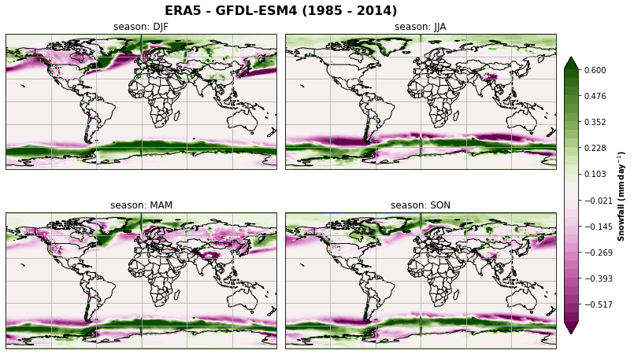
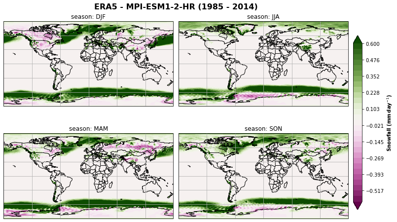
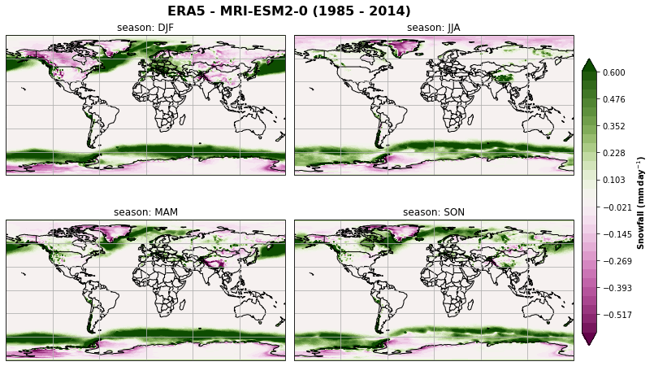
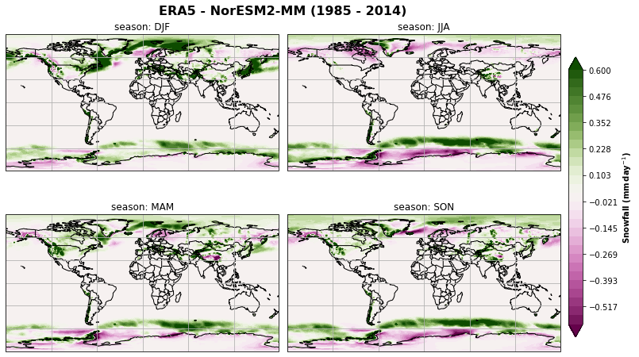
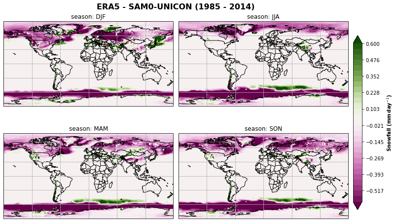
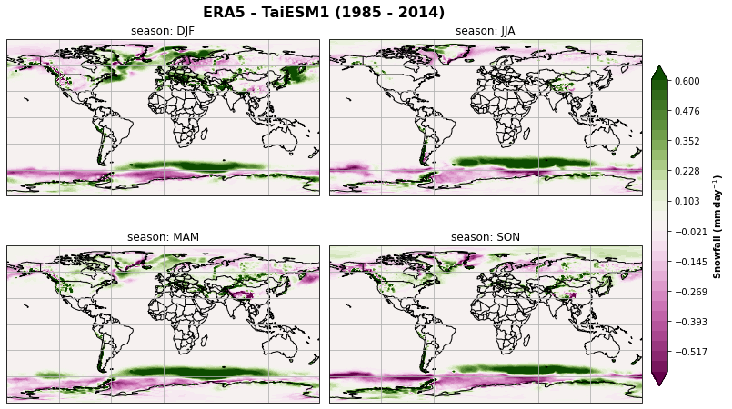
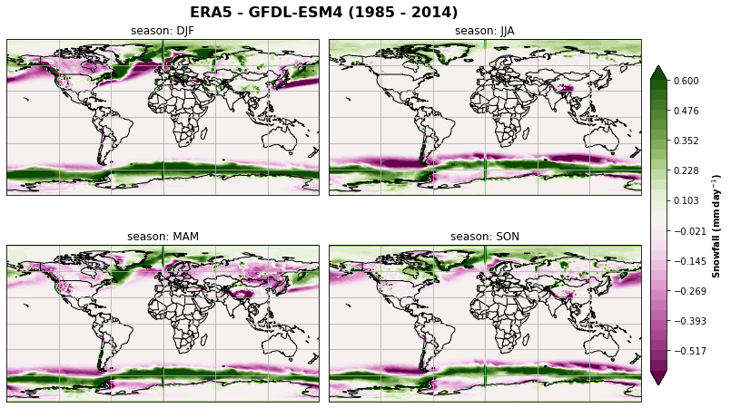
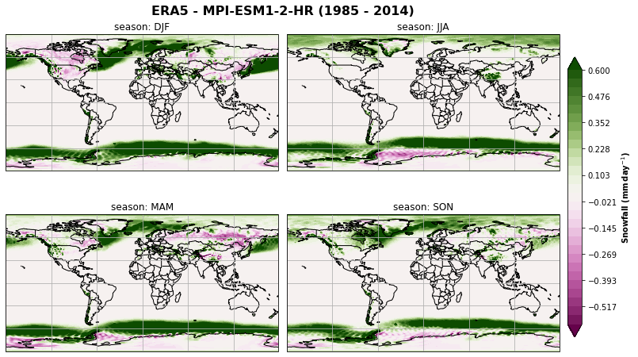
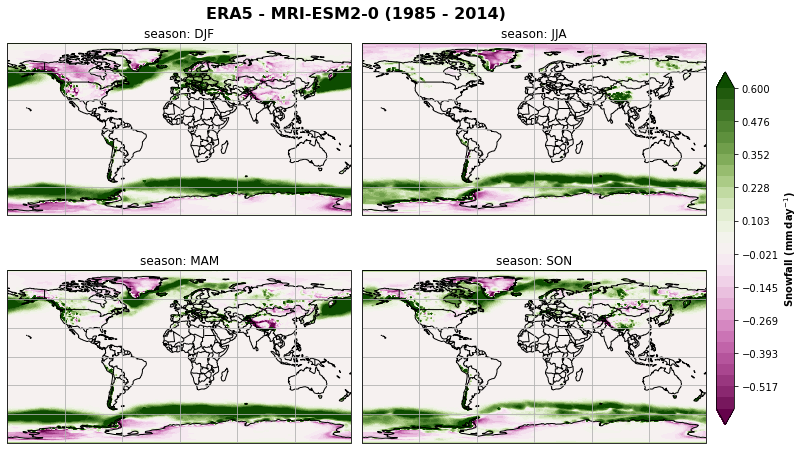
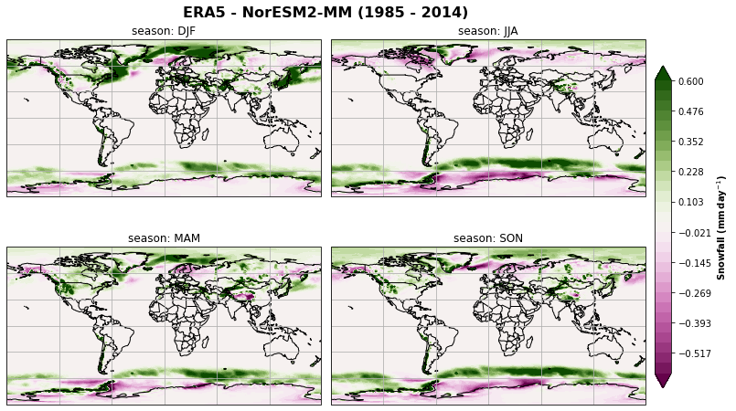
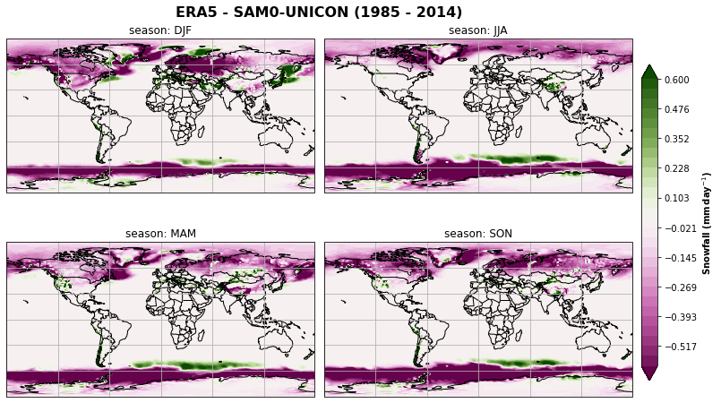
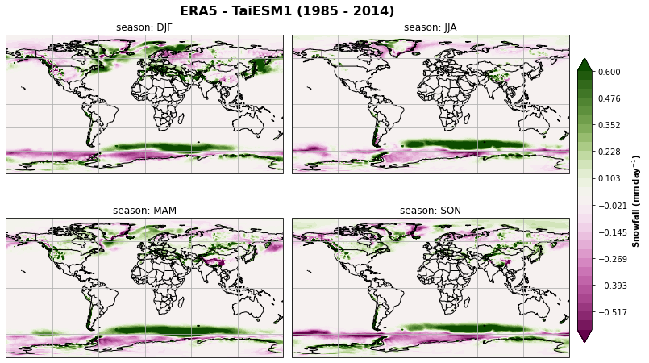
Plot the seasonal mean zonally¶
cmip[variable_id[0][0]+'_season_zonal_mean'] = cmip[variable_id[0][0]+'_season_mean'].mean('lon', keep_attrs=True, skipna=True)
era[variable_id[0][1]+'_season_zonal_mean'] = era[variable_id[0][1]+'_season_mean'].mean('lon', keep_attrs=True, skipna=True)
era[variable_id[0][1]+'_season_zonal_std'] = era[variable_id[0][1]+'_season_mean'].std('lon', keep_attrs=True, skipna=True)
fct.plt_zonal_seasonal(cmip[variable_id[0][0]+'_season_zonal_mean'], title='High resolution ({} - {})'.format(starty, endy), label=cbar_label)
# save figure to png
figdir = '/uio/kant/geo-metos-u1/franzihe/Documents/Figures/CMIP6/'
figname = '{}_season_zonal_mean_1deg_{}_{}.png'.format(variable_id[0][0], starty, endy )
plt.savefig(figdir + figname, format = 'png', bbox_inches = 'tight', transparent = False)
axs = fct.plt_zonal_seasonal(cmip[variable_id[0][0]+'_season_zonal_mean'], title='High resolution ({} - {})'.format(starty, endy), label=cbar_label)
for ax, i in zip(axs, era.season):
era[variable_id[0][1]+'_season_zonal_mean'].sel(season=i).plot(ax=ax, label="ERA5", color="k")
ax.fill_between(era.lat,
(era[variable_id[0][1]+'_season_zonal_mean'] - era[variable_id[0][1]+'_season_zonal_std']).sel(season=i),
(era[variable_id[0][1]+'_season_zonal_mean'] + era[variable_id[0][1]+'_season_zonal_std']).sel(season=i),
alpha=0.3,facecolor="k", )
cmip[variable_id[0][0]+'_season_zonal_mean'].mean('model', keep_attrs=True, skipna=True).sel(season=i).plot(ax=ax, label='CMIP6 mean', color='k', linestyle='--')
axs[1].legend(
loc="upper left",
bbox_to_anchor=(1, 1),
title=cbar_label,
fontsize="small",
fancybox=True,
)
# save figure to png
figdir = '/uio/kant/geo-metos-u1/franzihe/Documents/Figures/CMIP6_ERA5_CloudSat/'
figname = '{}_season_zonal_mean_1deg_{}_{}.png'.format(variable_id[0][0],starty, endy )
plt.savefig(figdir + figname, format = 'png', bbox_inches = 'tight', transparent = False)
Plot global mean of CMIP6 and ERA5, literature values¶
fig, ax = plt.subplots(1, 1, figsize=[10, 7], sharex=True, sharey=True,)
fig.suptitle('Global mean ({} - {})'.format(starty, endy), fontsize=16, fontweight="bold")
ax.grid()
fct.plt_bar_area_mean(ax, cmip[variable_id[0][0]+'_global_mean'],
era[variable_id[0][1]+'_global_mean'], loc=0, bar_width = 0.5, ylabel=cbar_label)
ax.get_legend().set_visible(False)
# save figure to png
figdir = '/uio/kant/geo-metos-u1/franzihe/Documents/Figures/CMIP6_ERA5_CloudSat/'
figname = '{}_global_mean_1deg_{}_{}.png'.format(variable_id[0][0],starty, endy )
plt.savefig(figdir + figname, format = 'png', bbox_inches = 'tight', transparent = False)
No handles with labels found to put in legend.
South of 30 deg¶
lat_SH = (-90,-30)
# lat: -90, -30
_var_id = '{}_{}_{}_mean'.format(variable_id[0][0],lat_SH[0], lat_SH[1], )
cmip[_var_id] = cmip[variable_id[0][0]].sel(lat = slice(lat_SH[0],lat_SH[1])).mean(('time', 'lat', 'lon'), keep_attrs=True, skipna = True)
_var_id = '{}_{}_{}_mean'.format(variable_id[0][1],lat_SH[0], lat_SH[1], )
era[_var_id] = era[variable_id[0][1]].sel(lat = slice(lat_SH[0],lat_SH[1])).mean(('time', 'lat', 'lon'), keep_attrs=True, skipna = True)
#####################################
# bar plot only south
fig, ax = plt.subplots(1, 1, figsize=[10, 7], sharex=True, sharey=True,)
fig.suptitle("SH mean: {}".format(str(lat_SH)), fontsize=16, fontweight="bold")
ax.grid()
fct.plt_bar_area_mean(ax, cmip['{}_{}_{}_mean'.format(variable_id[0][0],lat_SH[0], lat_SH[1], )],
era['{}_{}_{}_mean'.format(variable_id[0][1],lat_SH[0], lat_SH[1], )], loc=0, bar_width=0.5, alpha=0.75, hatch='//', ylabel=cbar_label)
ax.get_legend().set_visible(False)
# save figure to png
figdir = '/uio/kant/geo-metos-u1/franzihe/Documents/Figures/CMIP6_ERA5_CloudSat/'
figname = '{}_{}_mean_1deg_{}_{}.png'.format(variable_id[0][0], str(lat_SH), starty, endy )
plt.savefig(figdir + figname, format = 'png', bbox_inches = 'tight', transparent = False)
No handles with labels found to put in legend.
North of 30 deg¶
lat_NH = (30, 90)
# lat: 30, 90
_var_id = '{}_{}_{}_mean'.format(variable_id[0][0],lat_NH[0], lat_NH[1], )
cmip[_var_id] = cmip[variable_id[0][0]].sel(lat = slice(lat_NH[0], lat_NH[1])).mean(('time', 'lat', 'lon'), keep_attrs=True, skipna = True)
_var_id = '{}_{}_{}_mean'.format(variable_id[0][1],lat_NH[0], lat_NH[1], )
era[_var_id] = era[variable_id[0][1]].sel(lat = slice(lat_NH[0], lat_NH[1])).mean(('time', 'lat', 'lon'), keep_attrs=True, skipna = True)
#####################################
# bar plot only North
fig, ax = plt.subplots(1, 1, figsize=[10, 7], sharex=True, sharey=True,)
fig.suptitle("NH mean: {}".format(str(lat_NH)), fontsize=16, fontweight="bold")
ax.grid()
fct.plt_bar_area_mean(ax, cmip['{}_{}_{}_mean'.format(variable_id[0][0],lat_NH[0], lat_NH[1], )],
era['{}_{}_{}_mean'.format(variable_id[0][1],lat_NH[0], lat_NH[1], )], loc=0, bar_width=0.5, alpha = 0.5, hatch='+', ylabel=cbar_label)
ax.get_legend().set_visible(False)
# save figure to png
figdir = '/uio/kant/geo-metos-u1/franzihe/Documents/Figures/CMIP6_ERA5_CloudSat/'
figname = '{}_{}_mean_1deg_{}_{}.png'.format(variable_id[0][0], str(lat_NH), starty, endy)
plt.savefig(figdir + figname, format = 'png', bbox_inches = 'tight', transparent = False)
No handles with labels found to put in legend.
Global, 30N/S¶
fig, ax = plt.subplots(1, 1, figsize=[10, 7], sharex=True, sharey=True,)
fig.suptitle('Mean ({} - {})'.format(starty, endy), fontsize=16, fontweight="bold")
ax.grid()
fct.plt_bar_area_mean(ax, cmip[variable_id[0][0]+'_global_mean'],
era[variable_id[0][1]+'_global_mean'], loc=-1,bar_width = 0.25,label="Global", ylabel=cbar_label)
fct.plt_bar_area_mean(ax, cmip['{}_{}_{}_mean'.format(variable_id[0][0],lat_NH[0], lat_NH[1], )],
era['{}_{}_{}_mean'.format(variable_id[0][1],lat_NH[0], lat_NH[1], )], loc=0, bar_width = 0.25, hatch="+", alpha = 0.5, label="NH: {}".format(str(lat_NH)), ylabel=cbar_label)
fct.plt_bar_area_mean(ax, cmip['{}_{}_{}_mean'.format(variable_id[0][0],lat_SH[0], lat_SH[1], )],
era['{}_{}_{}_mean'.format(variable_id[0][1],lat_SH[0], lat_SH[1], )], loc=1, bar_width = 0.25, hatch="//", alpha = 0.75, label="SH: {}".format(str(lat_SH)), ylabel=cbar_label)
# save figure to png
figdir = '/uio/kant/geo-metos-u1/franzihe/Documents/Figures/CMIP6_ERA5_CloudSat/'
figname = '{}_global_{}NS_mean_1deg_{}_{}.png'.format(variable_id[0][0], str(lat_NH), starty, endy )
plt.savefig(figdir + figname, format = 'png', bbox_inches = 'tight', transparent = False)
Plot IWP vs. snowfall for when snowfall occurs \(\rightarrow\) snowfall>0¶
is there a relationship?
if not - what else is going on?
then invastigate cloud phase processes
era['iwp_sf>25'] = era['tciw'].where(era['sf'] > 0.25)
era['sf_sf>25'] = era['sf'].where(era['sf'] > 0.25)
cmip['iwp_sf>25'] = cmip['clivi'].where(cmip['prsn'] > 0.25)
cmip['sf_sf>25'] = cmip['prsn'].where(cmip['prsn'] > 0.25)
South of -30 deg¶
step = 15
iteration_SH = range(lat_SH[1], lat_SH[0], -step)
for _lat in iteration_SH:
era['iwp_{}_{}'.format(_lat, _lat-step)] = era['iwp_sf>25'].sel(lat=slice(_lat-step, _lat),).groupby('time.season').mean('time', keep_attrs=True, skipna = True)
era['sf_{}_{}'.format(_lat, _lat-step)] = era['sf_sf>25'].sel(lat=slice(_lat-step, _lat),).groupby('time.season').mean('time', keep_attrs=True, skipna = True)
cmip['iwp_{}_{}'.format(_lat, _lat-step)] = cmip['iwp_sf>25'].sel(lat=slice(_lat-step, _lat),).groupby('time.season').mean('time', keep_attrs=True, skipna = True)
cmip['sf_{}_{}'.format(_lat, _lat-step)] = cmip['sf_sf>25'].sel(lat=slice(_lat-step, _lat),).groupby('time.season').mean('time', keep_attrs=True, skipna = True)
North of 30 deg¶
iteration_NH = range(lat_NH[0], lat_NH[1], step)
for _lat in iteration_NH:
era['iwp_{}_{}'.format(_lat, _lat+step)] = era['iwp_sf>25'].sel(lat=slice(_lat, _lat+step),).groupby('time.season').mean('time', keep_attrs=True, skipna = True)
era['sf_{}_{}'.format(_lat, _lat+step)] = era['sf_sf>25'].sel(lat=slice(_lat, _lat+step),).groupby('time.season').mean('time', keep_attrs=True, skipna = True)
cmip['iwp_{}_{}'.format(_lat, _lat+step)] = cmip['iwp_sf>25'].sel(lat=slice(_lat, _lat+step),).groupby('time.season').mean('time', keep_attrs=True, skipna = True)
cmip['sf_{}_{}'.format(_lat, _lat+step)] = cmip['sf_sf>25'].sel(lat=slice(_lat, _lat+step),).groupby('time.season').mean('time', keep_attrs=True, skipna = True)
Calculate linear regression and create dataset from latitudes¶
era_SH = fct.return_ds_regression(era, iteration_SH, -step)
era_NH = fct.return_ds_regression(era, iteration_NH, step)
era_linreg = xr.merge([era_SH, era_NH])
del era_SH, era_NH
cmip_mm_SH = fct.return_ds_regression(cmip.mean('model', keep_attrs=True, skipna = True), iteration_SH, -step)
cmip_mm_NH = fct.return_ds_regression(cmip.mean('model', keep_attrs=True, skipna = True), iteration_NH, step)
cmip_mm_linreg = xr.merge([cmip_mm_SH, cmip_mm_NH])
del cmip_mm_SH, cmip_mm_NH
cmip_SH = dict()
cmip_NH = dict()
for model in cmip.model.values:
cmip_SH[model] = fct.return_ds_regression(cmip.sel(model = model), iteration_SH, -step)
cmip_NH[model] = fct.return_ds_regression(cmip.sel(model = model), iteration_NH, step)
cmip_linreg = xr.merge([xr.concat(objs=list(cmip_SH.values()),
dim=list(cmip_SH.keys()),
coords="all").rename({'concat_dim':'model'}),
xr.concat(objs=list(cmip_NH.values()),
dim=list(cmip_NH.keys()),
coords="all").rename({'concat_dim':'model'})])
del cmip_SH, cmip_NH
Table with regression values¶
This step is not necessary as I could just use the xarray.to_pandas() function. But I want to have the table in the form as I want to use it in the paper, then I can use pandas.to_latex(). It can take any table output and make it LaTeX style for easy copy paste.
like so: era_linreg_pd.round(3).to_latex()
era_linreg_pd = pd.DataFrame()
for season in era_linreg.season.values:
da_sh, idx_sh = fct.return_pd_dataFrame_corr_coeff(era_linreg, season, iteration_SH, step = -15)
da_nh, idx_nh = fct.return_pd_dataFrame_corr_coeff(era_linreg, season, iteration_NH, step = 15)
da = pd.concat([da_sh, da_nh], axis = 1)
era_linreg_pd = era_linreg_pd.append(da, ignore_index = False)
era_linreg_pd.columns = [pd.concat([idx_sh, idx_nh])]
era_linreg_pd.drop(labels='season').astype(float).round(3)
# era_linreg_pd.drop(labels='season').astype(float).round(3).to_latex()
| [-30,-45] | [-45,-60] | [-60,-75] | [-75,-90] | [30,45] | [45,60] | [60,75] | [75,90] | |
|---|---|---|---|---|---|---|---|---|
| R**2 | -0.208 | -0.039 | 0.723 | 0.787 | 0.285 | 0.563 | 0.839 | 0.958 |
| a | -0.004 | -0.004 | 0.059 | 0.051 | 0.012 | 0.044 | 0.070 | 0.073 |
| b | 0.626 | 0.840 | -0.454 | -0.393 | 0.403 | -0.367 | -1.004 | -0.977 |
| R**2 | 0.103 | 0.716 | 0.936 | 0.880 | -0.007 | 0.194 | 0.143 | 0.499 |
| a | 0.007 | 0.095 | 0.070 | 0.050 | -0.000 | 0.005 | 0.006 | 0.041 |
| b | 0.331 | -2.561 | -1.070 | -0.617 | 0.711 | 0.361 | 0.435 | -0.084 |
| R**2 | -0.198 | 0.400 | 0.903 | 0.869 | 0.193 | 0.364 | 0.722 | 0.897 |
| a | -0.008 | 0.050 | 0.074 | 0.051 | 0.009 | 0.027 | 0.053 | 0.071 |
| b | 0.874 | -1.047 | -1.017 | -0.566 | 0.450 | 0.011 | -0.496 | -0.852 |
| R**2 | -0.203 | 0.620 | 0.912 | 0.857 | 0.017 | 0.366 | 0.587 | 0.827 |
| a | -0.009 | 0.102 | 0.071 | 0.046 | 0.001 | 0.023 | 0.043 | 0.059 |
| b | 0.833 | -2.792 | -1.027 | -0.474 | 0.629 | 0.153 | -0.249 | -0.620 |
cmip_mm_linreg_pd = pd.DataFrame()
for season in cmip_mm_linreg.season.values:
da_sh, idx_sh = fct.return_pd_dataFrame_corr_coeff(cmip_mm_linreg, season, iteration_SH, step = -15)
da_nh, idx_nh = fct.return_pd_dataFrame_corr_coeff(cmip_mm_linreg, season, iteration_NH, step = 15)
da = pd.concat([da_sh, da_nh], axis = 1)
cmip_mm_linreg_pd = cmip_mm_linreg_pd.append(da, ignore_index = False)
cmip_mm_linreg_pd.columns = [pd.concat([idx_sh, idx_nh])]
cmip_mm_linreg_pd.drop(labels='season').astype(float).round(3)
# cmip_mm_linreg_pd.drop(labels='season').astype(float).round(3).to_latex()
| [-30,-45] | [-45,-60] | [-60,-75] | [-75,-90] | [30,45] | [45,60] | [60,75] | [75,90] | |
|---|---|---|---|---|---|---|---|---|
| R**2 | -0.258 | -0.468 | 0.617 | 0.694 | -0.060 | 0.190 | 0.668 | 0.905 |
| a | -0.001 | -0.004 | 0.032 | 0.034 | -0.001 | 0.005 | 0.028 | 0.048 |
| b | 0.435 | 0.716 | 0.132 | -0.054 | 0.742 | 0.896 | 0.214 | -0.219 |
| R**2 | -0.096 | -0.306 | 0.919 | 0.866 | 0.071 | 0.079 | 0.035 | 0.307 |
| a | -0.001 | -0.013 | 0.057 | 0.044 | 0.001 | 0.001 | 0.001 | 0.009 |
| b | 0.473 | 1.693 | -0.321 | -0.207 | 0.535 | 0.481 | 0.545 | 0.487 |
| R**2 | -0.232 | -0.372 | 0.769 | 0.888 | -0.066 | -0.065 | 0.551 | 0.789 |
| a | -0.001 | -0.007 | 0.042 | 0.047 | -0.001 | -0.002 | 0.022 | 0.040 |
| b | 0.458 | 1.045 | 0.027 | -0.240 | 0.739 | 0.963 | 0.312 | -0.059 |
| R**2 | -0.047 | -0.448 | 0.894 | 0.838 | -0.237 | -0.170 | 0.291 | 0.671 |
| a | -0.000 | -0.015 | 0.054 | 0.041 | -0.002 | -0.003 | 0.010 | 0.025 |
| b | 0.415 | 1.631 | -0.243 | -0.173 | 0.675 | 1.037 | 0.717 | 0.295 |
for model in cmip_linreg.model.values:
cmip_linreg_pd = pd.DataFrame()
for season in cmip_linreg.sel(model = model).season.values:
da_sh, idx_sh = fct.return_pd_dataFrame_corr_coeff(cmip_linreg.sel(model = model), season, iteration_SH, step = -15)
da_nh, idx_nh = fct.return_pd_dataFrame_corr_coeff(cmip_linreg.sel(model = model), season, iteration_NH, step = 15)
da = pd.concat([da_sh, da_nh], axis = 1)
cmip_linreg_pd = cmip_linreg_pd.append(da, ignore_index = False)
cmip_linreg_pd.columns = [pd.concat([idx_sh, idx_nh])]
print(model, cmip_linreg_pd.drop(labels='season').astype(float).round(3))
# print(model, cmip_linreg_pd.drop(labels='season').astype(float).round(3).to_latex())
BCC-CSM2-MR [-30,-45] [-45,-60] [-60,-75] [-75,-90] [30,45] [45,60] [60,75] [75,90]
R**2 NaN -0.196 0.654 0.945 0.394 0.546 0.757 0.699
a NaN -0.008 0.029 0.028 0.013 0.023 0.040 0.033
b NaN 0.814 -0.229 -0.215 0.277 -0.025 -0.658 -0.537
R**2 -0.039 0.515 0.880 0.950 -0.001 0.406 0.423 0.846
a -0.001 0.040 0.045 0.029 -0.000 0.010 0.018 0.048
b 0.454 -1.225 -0.599 -0.252 0.600 0.140 -0.011 -0.630
R**2 -0.053 0.343 0.834 0.931 0.286 0.333 0.723 0.732
a -0.003 0.014 0.043 0.028 0.014 0.013 0.035 0.029
b 0.610 -0.173 -0.641 -0.204 0.263 0.287 -0.410 -0.366
R**2 0.306 0.159 0.826 0.957 0.281 0.446 0.629 0.888
a 0.005 0.011 0.041 0.030 0.011 0.017 0.035 0.049
b 0.330 0.115 -0.451 -0.280 0.306 0.102 -0.475 -0.963
CAMS-CSM1-0 [-30,-45] [-45,-60] [-60,-75] [-75,-90] [30,45] [45,60] [60,75] [75,90]
R**2 NaN NaN NaN NaN NaN NaN NaN NaN
a NaN NaN NaN NaN NaN NaN NaN NaN
b NaN NaN NaN NaN NaN NaN NaN NaN
R**2 NaN NaN NaN NaN NaN NaN NaN NaN
a NaN NaN NaN NaN NaN NaN NaN NaN
b NaN NaN NaN NaN NaN NaN NaN NaN
R**2 NaN NaN NaN NaN NaN NaN NaN NaN
a NaN NaN NaN NaN NaN NaN NaN NaN
b NaN NaN NaN NaN NaN NaN NaN NaN
R**2 NaN NaN NaN NaN NaN NaN NaN NaN
a NaN NaN NaN NaN NaN NaN NaN NaN
b NaN NaN NaN NaN NaN NaN NaN NaN
CIESM [-30,-45] [-45,-60] [-60,-75] [-75,-90] [30,45] [45,60] [60,75] [75,90]
R**2 NaN NaN NaN NaN NaN NaN NaN NaN
a NaN NaN NaN NaN NaN NaN NaN NaN
b NaN NaN NaN NaN NaN NaN NaN NaN
R**2 NaN NaN NaN NaN NaN NaN NaN NaN
a NaN NaN NaN NaN NaN NaN NaN NaN
b NaN NaN NaN NaN NaN NaN NaN NaN
R**2 NaN NaN NaN NaN NaN NaN NaN NaN
a NaN NaN NaN NaN NaN NaN NaN NaN
b NaN NaN NaN NaN NaN NaN NaN NaN
R**2 NaN NaN NaN NaN NaN NaN NaN NaN
a NaN NaN NaN NaN NaN NaN NaN NaN
b NaN NaN NaN NaN NaN NaN NaN NaN
CMCC-CM2-HR4 [-30,-45] [-45,-60] [-60,-75] [-75,-90] [30,45] [45,60] [60,75] [75,90]
R**2 NaN 0.047 0.230 0.446 0.384 0.311 0.655 0.925
a NaN 0.004 0.024 0.024 0.021 0.021 0.059 0.067
b NaN 0.477 0.353 -0.208 0.208 0.271 -0.955 -1.208
R**2 -0.105 0.430 0.834 0.769 -0.295 0.141 0.348 0.685
a -0.003 0.052 0.091 0.043 -0.022 0.006 0.023 0.044
b 0.636 -1.007 -1.909 -0.894 1.130 0.349 0.079 -0.096
R**2 0.168 0.119 0.792 0.801 0.259 0.354 0.543 0.779
a 0.004 0.010 0.083 0.044 0.023 0.019 0.037 0.052
b 0.377 0.304 -1.541 -0.878 0.203 0.170 -0.216 -0.677
R**2 -0.279 -0.020 0.692 0.766 0.275 0.451 0.373 0.616
a -0.008 -0.002 0.072 0.039 0.018 0.025 0.032 0.037
b 0.851 0.836 -1.215 -0.759 0.283 0.040 -0.021 -0.175
CMCC-CM2-SR5 [-30,-45] [-45,-60] [-60,-75] [-75,-90] [30,45] [45,60] [60,75] [75,90]
R**2 -0.798 -0.305 -0.592 -0.273 0.112 0.114 0.197 0.736
a -0.079 -0.049 -0.037 -0.004 0.003 0.004 0.012 0.030
b 1.240 1.317 1.690 0.495 0.736 1.044 0.941 0.495
R**2 -0.023 -0.074 0.487 0.719 -0.121 -0.059 -0.019 0.262
a -0.001 -0.006 0.063 0.153 -0.004 -0.001 -0.001 0.046
b 0.680 1.413 0.884 -0.787 0.950 0.558 0.591 0.394
R**2 -0.049 -0.322 0.481 0.632 0.447 -0.097 0.095 0.689
a -0.003 -0.024 0.063 0.141 0.012 -0.004 0.006 0.059
b 0.621 1.544 0.874 -0.537 0.531 1.012 0.869 0.352
R**2 -0.317 -0.313 0.407 0.560 0.237 -0.058 -0.195 0.016
a -0.009 -0.024 0.063 0.105 0.008 -0.002 -0.012 0.000
b 0.685 1.672 0.856 -0.345 0.558 0.937 1.277 1.086
CMCC-ESM2 [-30,-45] [-45,-60] [-60,-75] [-75,-90] [30,45] [45,60] [60,75] [75,90]
R**2 NaN NaN NaN NaN NaN NaN NaN NaN
a NaN NaN NaN NaN NaN NaN NaN NaN
b NaN NaN NaN NaN NaN NaN NaN NaN
R**2 NaN NaN NaN NaN NaN NaN NaN NaN
a NaN NaN NaN NaN NaN NaN NaN NaN
b NaN NaN NaN NaN NaN NaN NaN NaN
R**2 NaN NaN NaN NaN NaN NaN NaN NaN
a NaN NaN NaN NaN NaN NaN NaN NaN
b NaN NaN NaN NaN NaN NaN NaN NaN
R**2 NaN NaN NaN NaN NaN NaN NaN NaN
a NaN NaN NaN NaN NaN NaN NaN NaN
b NaN NaN NaN NaN NaN NaN NaN NaN
E3SM-1-1 [-30,-45] [-45,-60] [-60,-75] [-75,-90] [30,45] [45,60] [60,75] [75,90]
R**2 NaN -0.426 0.033 0.693 0.301 0.373 0.658 0.952
a NaN -0.021 0.003 0.090 0.011 0.021 0.030 0.049
b NaN 0.846 0.810 -0.086 0.655 0.922 0.691 0.339
R**2 -0.193 -0.366 0.572 0.653 -0.294 -0.067 -0.146 0.242
a -0.004 -0.032 0.068 0.207 -0.011 -0.002 -0.006 0.027
b 0.579 1.973 0.968 -0.309 0.776 0.511 0.613 0.503
R**2 0.024 -0.309 0.433 0.816 0.089 -0.042 0.471 0.886
a 0.001 -0.019 0.034 0.238 0.004 -0.002 0.020 0.045
b 0.468 1.255 1.067 -0.397 0.760 1.051 0.675 0.314
R**2 -0.047 -0.431 0.548 0.672 0.116 0.116 0.040 0.790
a -0.001 -0.023 0.074 0.237 0.003 0.005 0.002 0.023
b 0.442 1.432 0.823 -0.387 0.586 0.902 1.042 0.658
E3SM-1-1-ECA [-30,-45] [-45,-60] [-60,-75] [-75,-90] [30,45] [45,60] [60,75] [75,90]
R**2 NaN -0.510 -0.029 0.752 0.301 0.413 0.686 0.949
a NaN -0.026 -0.003 0.090 0.011 0.022 0.035 0.056
b NaN 0.927 0.880 -0.066 0.674 0.861 0.637 0.311
R**2 -0.287 -0.303 0.567 0.641 -0.258 0.002 -0.107 0.383
a -0.005 -0.025 0.069 0.204 -0.010 0.000 -0.005 0.045
b 0.566 1.764 0.958 -0.289 0.718 0.516 0.628 0.447
R**2 0.459 -0.319 0.464 0.805 0.091 0.101 0.601 0.901
a 0.005 -0.021 0.037 0.252 0.004 0.005 0.027 0.054
b 0.321 1.304 1.029 -0.460 0.765 0.913 0.608 0.281
R**2 0.136 -0.455 0.546 0.725 0.126 0.139 0.135 0.813
a 0.002 -0.028 0.075 0.266 0.003 0.006 0.005 0.028
b 0.412 1.568 0.823 -0.498 0.565 0.873 0.990 0.597
EC-Earth3-AerChem [-30,-45] [-45,-60] [-60,-75] [-75,-90] [30,45] [45,60] [60,75] [75,90]
R**2 -0.315 -0.163 0.484 0.918 0.217 0.527 0.876 0.946
a -0.004 -0.003 0.022 0.049 0.005 0.024 0.047 0.055
b 0.377 0.614 -0.007 -0.609 0.562 -0.071 -0.883 -1.024
R**2 0.165 0.186 0.928 0.934 -0.145 0.133 0.194 0.657
a 0.006 0.010 0.048 0.036 -0.004 0.003 0.005 0.036
b 0.459 0.258 -0.872 -0.506 0.819 0.434 0.409 -0.207
R**2 -0.016 0.050 0.768 0.939 0.119 0.331 0.805 0.856
a -0.000 0.001 0.042 0.045 0.003 0.015 0.038 0.053
b 0.576 0.450 -0.767 -0.658 0.596 0.238 -0.436 -0.827
R**2 -0.252 -0.035 0.856 0.933 0.035 0.383 0.610 0.847
a -0.004 -0.002 0.046 0.040 0.001 0.013 0.027 0.042
b 0.796 0.787 -0.717 -0.566 0.618 0.253 -0.131 -0.583
FGOALS-f3-L [-30,-45] [-45,-60] [-60,-75] [-75,-90] [30,45] [45,60] [60,75] [75,90]
R**2 -0.042 -0.147 0.494 0.610 -0.053 0.168 0.597 0.582
a -0.000 -0.001 0.009 0.010 -0.000 0.001 0.008 0.008
b 0.361 0.488 0.118 0.064 0.705 0.700 0.150 0.026
R**2 -0.174 -0.328 0.861 0.518 -0.042 0.185 0.150 0.468
a -0.002 -0.004 0.016 0.009 -0.000 0.001 0.002 0.010
b 0.907 1.220 -0.224 0.001 0.713 0.373 0.395 0.067
R**2 -0.231 -0.343 0.605 0.726 0.122 0.012 0.514 0.550
a -0.002 -0.003 0.011 0.019 0.001 0.000 0.007 0.008
b 0.850 0.826 0.050 -0.379 0.518 0.704 0.189 0.086
R**2 -0.287 -0.439 0.873 0.571 0.080 0.013 0.412 0.714
a -0.002 -0.005 0.016 0.010 0.001 0.000 0.006 0.016
b 0.795 1.114 -0.227 0.016 0.561 0.687 0.284 -0.210
GFDL-CM4 [-30,-45] [-45,-60] [-60,-75] [-75,-90] [30,45] [45,60] [60,75] [75,90]
R**2 -0.017 -0.078 0.498 0.911 0.270 0.492 0.863 0.919
a -0.000 -0.001 0.008 0.025 0.003 0.008 0.024 0.035
b 0.331 0.557 0.438 0.060 0.519 0.567 -0.007 -0.237
R**2 0.189 0.210 0.941 0.897 0.165 0.240 0.036 -0.041
a 0.001 0.007 0.025 0.024 0.002 0.001 0.000 -0.001
b 0.336 0.615 0.068 0.038 0.616 0.328 0.468 0.648
R**2 -0.038 0.146 0.807 0.912 0.133 0.418 0.763 0.908
a -0.000 0.003 0.020 0.025 0.002 0.006 0.016 0.026
b 0.416 0.485 0.200 0.040 0.565 0.418 0.152 -0.021
R**2 0.087 0.187 0.913 0.899 -0.078 0.180 0.652 0.878
a 0.000 0.008 0.022 0.023 -0.001 0.002 0.010 0.018
b 0.377 0.327 0.149 0.058 0.654 0.706 0.402 0.182
GFDL-ESM4 [-30,-45] [-45,-60] [-60,-75] [-75,-90] [30,45] [45,60] [60,75] [75,90]
R**2 -0.025 -0.014 0.442 0.902 0.210 0.389 0.840 0.925
a -0.000 -0.000 0.007 0.021 0.002 0.006 0.022 0.040
b 0.369 0.452 0.456 0.097 0.585 0.700 0.063 -0.366
R**2 0.308 0.275 0.932 0.893 0.330 0.168 -0.002 -0.061
a 0.002 0.007 0.023 0.023 0.005 0.000 -0.000 -0.001
b 0.265 0.421 0.078 0.037 0.432 0.354 0.460 0.627
R**2 0.046 0.273 0.765 0.913 0.112 0.121 0.730 0.890
a 0.000 0.005 0.017 0.024 0.002 0.002 0.015 0.027
b 0.386 0.167 0.241 0.043 0.595 0.789 0.261 -0.075
R**2 0.281 0.153 0.860 0.905 -0.068 0.090 0.587 0.890
a 0.002 0.005 0.019 0.021 -0.001 0.001 0.009 0.018
b 0.287 0.412 0.196 0.076 0.688 0.820 0.443 0.153
MPI-ESM1-2-HR [-30,-45] [-45,-60] [-60,-75] [-75,-90] [30,45] [45,60] [60,75] [75,90]
R**2 -0.460 -0.143 0.451 0.915 0.241 0.275 0.714 0.975
a -0.001 -0.002 0.012 0.023 0.006 0.009 0.025 0.038
b 0.445 0.590 0.283 0.022 0.426 0.545 -0.033 -0.327
R**2 0.402 -0.023 0.881 0.905 -0.086 0.338 0.107 0.485
a 0.011 -0.001 0.034 0.026 -0.002 0.004 0.002 0.015
b 0.058 0.891 -0.261 -0.044 0.836 0.211 0.422 0.049
R**2 0.108 0.012 0.652 0.920 0.373 0.149 0.647 0.920
a 0.002 0.000 0.023 0.028 0.014 0.005 0.020 0.034
b 0.575 0.541 0.061 -0.067 -0.166 0.664 0.086 -0.274
R**2 0.261 -0.187 0.888 0.906 0.247 0.367 0.498 0.827
a 0.004 -0.010 0.032 0.024 0.005 0.011 0.014 0.025
b 0.359 1.449 -0.166 -0.014 0.354 0.202 0.269 -0.047
MRI-ESM2-0 [-30,-45] [-45,-60] [-60,-75] [-75,-90] [30,45] [45,60] [60,75] [75,90]
R**2 -0.423 -0.345 0.550 0.869 0.436 0.202 0.693 0.950
a -0.002 -0.040 0.069 0.107 0.032 0.014 0.068 0.128
b 0.340 1.412 -0.020 -0.505 0.183 0.737 -0.066 -0.846
R**2 0.167 0.025 0.899 0.949 -0.376 0.059 0.183 0.601
a 0.012 0.004 0.117 0.085 -0.014 0.002 0.014 0.093
b 0.254 0.877 -0.737 -0.474 0.903 0.479 0.425 -0.068
R**2 0.066 -0.050 0.714 0.946 0.410 -0.019 0.602 0.928
a 0.002 -0.007 0.091 0.100 0.041 -0.001 0.052 0.117
b 0.628 0.879 -0.321 -0.597 -0.108 0.859 0.143 -0.606
R**2 -0.050 -0.385 0.876 0.951 0.318 0.146 0.331 0.801
a -0.002 -0.062 0.121 0.090 0.021 0.009 0.028 0.074
b 0.551 2.419 -0.766 -0.513 0.313 0.705 0.548 -0.042
NorESM2-MM [-30,-45] [-45,-60] [-60,-75] [-75,-90] [30,45] [45,60] [60,75] [75,90]
R**2 -1.000 -0.367 0.377 0.462 0.119 0.142 0.567 0.880
a -0.002 -0.039 0.060 0.110 0.005 0.010 0.049 0.150
b 0.296 1.153 0.489 -0.206 0.620 0.942 0.321 -0.757
R**2 -0.062 -0.234 0.758 0.491 0.183 0.094 -0.101 0.414
a -0.002 -0.027 0.117 0.088 0.009 0.002 -0.005 0.056
b 0.614 1.777 -0.254 -0.477 0.608 0.507 0.667 0.362
R**2 0.370 -0.348 0.639 0.407 0.582 0.003 0.383 0.810
a 0.015 -0.035 0.089 0.089 0.025 0.000 0.027 0.161
b 0.401 1.625 0.353 -0.299 0.109 0.883 0.554 -0.600
R**2 0.035 -0.304 0.717 0.347 0.207 0.108 0.255 0.867
a 0.001 -0.028 0.122 0.058 0.009 0.006 0.018 0.164
b 0.501 1.538 -0.254 -0.151 0.458 0.799 0.807 -0.561
SAM0-UNICON [-30,-45] [-45,-60] [-60,-75] [-75,-90] [30,45] [45,60] [60,75] [75,90]
R**2 -0.190 -0.246 0.424 0.243 -0.047 0.013 0.299 0.801
a -0.055 -0.068 0.172 0.075 -0.002 0.001 0.021 0.136
b 1.040 1.524 0.791 0.266 1.006 1.607 1.235 0.153
R**2 -0.275 -0.169 0.511 0.607 -0.047 -0.123 -0.198 0.377
a -0.013 -0.022 0.128 0.246 -0.002 -0.007 -0.041 0.345
b 0.853 2.050 1.187 -0.708 0.953 0.772 1.062 0.404
R**2 -0.422 -0.368 0.401 0.460 0.318 -0.230 0.105 0.764
a -0.027 -0.049 0.102 0.234 0.021 -0.016 0.008 0.232
b 0.935 1.989 1.587 -0.402 0.613 1.454 1.258 -0.089
R**2 -0.147 -0.397 0.547 0.452 0.064 -0.166 -0.098 0.634
a -0.007 -0.063 0.187 0.185 0.006 -0.012 -0.008 0.216
b 0.666 2.572 0.778 -0.332 0.831 1.439 1.643 0.439
TaiESM1 [-30,-45] [-45,-60] [-60,-75] [-75,-90] [30,45] [45,60] [60,75] [75,90]
R**2 0.545 -0.383 0.121 0.337 0.120 0.100 0.285 0.782
a 0.012 -0.007 0.007 0.031 0.001 0.001 0.007 0.050
b 0.299 0.950 1.164 0.151 0.733 1.151 0.914 0.120
R**2 -0.210 -0.414 0.428 0.730 0.156 -0.031 -0.193 0.352
a -0.002 -0.010 0.026 0.120 0.005 -0.000 -0.006 0.055
b 0.818 1.959 1.248 -0.683 0.631 0.565 0.735 0.406
R**2 -0.106 -0.496 0.255 0.509 0.137 -0.142 0.110 0.717
a -0.001 -0.010 0.013 0.095 0.002 -0.002 0.003 0.069
b 0.665 1.529 1.456 -0.557 0.706 1.022 0.904 0.061
R**2 -0.327 -0.524 0.472 0.676 0.142 -0.101 -0.091 0.571
a -0.004 -0.014 0.029 0.086 0.003 -0.001 -0.002 0.031
b 0.800 1.927 1.120 -0.375 0.602 1.021 1.208 0.544
Plot IWP-snowfall scatter with regression lines¶
# for ERA5 SH
fct.plt_scatter_iwp_sf_seasonal(era, era_linreg, iteration_SH, -step, title='IWP vs. Snowfall: ERA5 {}'.format(str(lat_SH)), xlim=[0, 100], ylim=[-0.5, 15])
# save figure to png
figdir = '/uio/kant/geo-metos-u1/franzihe/Documents/Figures/ERA5/'
figname = 'iwp_sf_{}_season_1deg_{}_{}.png'.format( str(lat_SH), starty, endy )
plt.savefig(figdir + figname, format = 'png', bbox_inches = 'tight', transparent = False)
############################################################
# for ERA5 NH
fct.plt_scatter_iwp_sf_seasonal(era, era_linreg, iteration_NH, step, title='IWP vs. Snowfall: ERA5 {}'.format(str(lat_NH)), xlim=[0, 100], ylim=[-0.5, 15])
# save figure to png
figdir = '/uio/kant/geo-metos-u1/franzihe/Documents/Figures/ERA5/'
figname = 'iwp_sf_{}_season_1deg_{}_{}.png'.format( str(lat_NH), starty, endy )
plt.savefig(figdir + figname, format = 'png', bbox_inches = 'tight', transparent = False)
# for CMIP6 model mean SH
fct.plt_scatter_iwp_sf_seasonal(cmip.mean('model', keep_attrs=True, skipna = True), cmip_mm_linreg, iteration_SH, -step, title='IWP vs. Snowfall: CMIP6 Model Mean {}'.format(str(lat_SH)), xlim=[0, 300], ylim=[-0.5, 15])
# save figure to png
figdir = '/uio/kant/geo-metos-u1/franzihe/Documents/Figures/CMIP6/'
figname = 'iwp_sf_{}_model_mean_season_1deg_{}_{}.png'.format( str(lat_SH), starty, endy )
plt.savefig(figdir + figname, format = 'png', bbox_inches = 'tight', transparent = False)
############################################################
# for CMIP6 model mean NH
fct.plt_scatter_iwp_sf_seasonal(cmip.mean('model', keep_attrs=True, skipna = True), cmip_mm_linreg, iteration_NH, step, title='IWP vs. Snowfall: CMIP6 Model Mean {}'.format(str(lat_SH)), xlim=[0, 300], ylim=[-0.5, 15])
# save figure to png
figdir = '/uio/kant/geo-metos-u1/franzihe/Documents/Figures/CMIP6/'
figname = 'iwp_sf_{}_model_mean_season_1deg_{}_{}.png'.format( str(lat_NH), starty, endy )
plt.savefig(figdir + figname, format = 'png', bbox_inches = 'tight', transparent = False)
for model in cmip.model.values:
# for CMIP6 individual model SH
fct.plt_scatter_iwp_sf_seasonal(cmip.sel(model = model), cmip_linreg.sel(model = model), iteration_SH, -step, title='IWP vs. Snowfall: {} {}'.format(model, str(lat_SH)), xlim=[0, 500], ylim=[-0.5, 15])
# save figure to png
figdir = '/uio/kant/geo-metos-u1/franzihe/Documents/Figures/CMIP6/'
figname = 'iwp_sf_{}_{}_season_1deg_{}_{}.png'.format( str(lat_SH), model, starty, endy )
plt.savefig(figdir + figname, format = 'png', bbox_inches = 'tight', transparent = False)
############################################################
# for CMIP6 individual model NH
fct.plt_scatter_iwp_sf_seasonal(cmip.sel(model = model), cmip_linreg.sel(model = model), iteration_NH, step, title='IWP vs. Snowfall: {} {}'.format(model, str(lat_NH)), xlim=[0, 500], ylim=[-0.5, 15])
# save figure to png
figdir = '/uio/kant/geo-metos-u1/franzihe/Documents/Figures/CMIP6/'
figname = 'iwp_sf_{}_{}_season_1deg_{}_{}.png'.format( str(lat_NH), model, starty, endy )
plt.savefig(figdir + figname, format = 'png', bbox_inches = 'tight', transparent = False)
Difference ERA5 - CMIP6 model mean¶
step = 15
diff = xr.Dataset()
for _lat in range(-90, -30, step):
diff['iwp_{}_{}'.format(_lat, _lat+step)] = era['iwp_{}_{}'.format(_lat, _lat+step)] - cmip['iwp_{}_{}'.format(_lat, _lat+step)].mean('model', keep_attrs=True, skipna = True)
diff['sf_{}_{}'.format(_lat, _lat+step)] = era['sf_{}_{}'.format(_lat, _lat+step)] - cmip['sf_{}_{}'.format(_lat, _lat+step)].mean('model', keep_attrs=True, skipna = True)
for _lat in range(30, 90, step):
diff['iwp_{}_{}'.format(_lat, _lat+step)] = era['iwp_{}_{}'.format(_lat, _lat+step)] - cmip['iwp_{}_{}'.format(_lat, _lat+step)].mean('model', keep_attrs=True, skipna = True)
diff['sf_{}_{}'.format(_lat, _lat+step)] = era['sf_{}_{}'.format(_lat, _lat+step)] - cmip['sf_{}_{}'.format(_lat, _lat+step)].mean('model', keep_attrs=True, skipna = True)
fig, axsm = plt.subplots(2,2, figsize=[10,7], sharex=True, sharey=True,
)
fig.suptitle('IWP vs. Snowfall: ERA5 - CMIP6 model mean {}'.format(str(lat_SH)), fontsize=16, fontweight="bold")
axs = axsm.flatten()
for ax, i in zip(axs, diff.season):
ax.grid()
for _lat, c in zip(range(-90, -30, step), cm.romaO(range(0, 256, int(256 / 4)))):
ax.scatter(diff['iwp_{}_{}'.format(_lat, _lat+step)].sel(season=i),
diff['sf_{}_{}'.format(_lat, _lat+step)].sel(season=i), label='{}, {}'.format(_lat, _lat+step),
color = c,
alpha = 0.5)
# _mask = (~np.isnan(diff['sf_{}_{}'.format(_lat, _lat+step)].sel(season=i).values.flatten()) & ~np.isnan(diff['iwp_{}_{}'.format(_lat, _lat+step)].sel(season=i).values.flatten()))
# _x = np.linspace(0,100)
# _y = _x*linregress(diff['iwp_{}_{}'.format(_lat, _lat+step)].sel(season=i).values.flatten()[_mask],
# diff['sf_{}_{}'.format(_lat, _lat+step)].sel(season=i).values.flatten()[_mask]).slope + linregress(diff['iwp_{}_{}'.format(_lat, _lat+step)].sel(season=i).values.flatten()[_mask], diff['sf_{}_{}'.format(_lat, _lat+step)].sel(season=i).values.flatten()[_mask]).intercept
# ax.plot(_x, _y, color = c, linewidth = '2')
ax.set_ylabel('Snowfall: ERA5 - CMIP6$_{model mean}$ (mm$\,$day$^{-1}$)', fontweight="bold")
ax.set_xlabel('Ice Water Path: ERA5 - CMIP5$_{model mean}$ (g$\,$m$^{-2}$)', fontweight="bold")
ax.set_title("season: {}; lat: {}".format(i.values, str(lat_SH)))
axs[1].legend(loc='upper left', bbox_to_anchor=(1, 1), fontsize='small', fancybox=True, )
plt.tight_layout()
fig, axsm = plt.subplots(2,2, figsize=[10,7],sharex=True,sharey=True,
)
fig.suptitle('IWP vs. Snowfall: ERA5 - CMIP6 model mean {}'.format(str(lat_NH)), fontsize=16, fontweight="bold")
axs = axsm.flatten()
for ax, i in zip(axs, diff.season):
ax.grid()
for _lat, c in zip(range(30, 90, step), cm.romaO(range(0, 256, int(256 / 4)))[::-1]):
ax.scatter(diff['iwp_{}_{}'.format(_lat, _lat+step)].sel(season=i),
diff['sf_{}_{}'.format(_lat, _lat+step)].sel(season=i), label='{}, {}'.format(_lat, _lat+step),
color = c,
alpha = 0.5)
# _mask = (~np.isnan(diff['sf_{}_{}'.format(_lat, _lat+step)].sel(season=i).values.flatten()) & ~np.isnan(diff['iwp_{}_{}'.format(_lat, _lat+step)].sel(season=i).values.flatten()))
# _x = np.linspace(0,100)
# _y = _x*linregress(diff['iwp_{}_{}'.format(_lat, _lat+step)].sel(season=i).values.flatten()[_mask],
# diff['sf_{}_{}'.format(_lat, _lat+step)].sel(season=i).values.flatten()[_mask]).slope + linregress(diff['iwp_{}_{}'.format(_lat, _lat+step)].sel(season=i).values.flatten()[_mask], diff['sf_{}_{}'.format(_lat, _lat+step)].sel(season=i).values.flatten()[_mask]).intercept
# ax.plot(_x, _y, color = c, linewidth = '2')
ax.set_ylabel('Snowfall: ERA5 - CMIP6$_{model mean}$ (mm$\,$day$^{-1}$)', fontweight="bold")
ax.set_xlabel('Ice Water Path: ERA5 - CMIP5$_{model mean}$ (g$\,$m$^{-2}$)', fontweight="bold")
ax.set_title("season: {}; lat: {}".format(i.values, str(lat_NH)))
axs[1].legend(loc='upper left', bbox_to_anchor=(1, 1), fontsize='small', fancybox=True, )
plt.tight_layout()
for k, c in zip(cmip.model.values, cm.romaO(range(0, 256, int(256 / len(cmip.model.values)))),):
fig, axsm = plt.subplots(2,2, figsize=[10,7], sharex=True, sharey=True,
)
fig.suptitle('IWP vs. Snowfall ({})'.format(k), fontsize=16, fontweight="bold")
axs = axsm.flatten()
for ax, i in zip(axs, era_where_snowfall.season):
ax.grid()
ax.scatter(era_where_snowfall['tciw_season'].sel(lat=lats, season=i),
era_where_snowfall['sf_season'].sel(lat=lats, season=i), label='ERA5', color = 'k', alpha = 0.5)
ax.scatter(cmip_where_snowfall['clivi_season'].sel(model=k).sel(lat=lats, season=i),
cmip_where_snowfall['prsn_season'].sel(model=k).sel(lat=lats, season=i), label = k, color = c, alpha=0.5)
ax.set_ylabel('Snowfall (mm$\,$day$^{-1}$)', fontweight="bold")
ax.set_xlabel('Ice Water Path (g$\,$m$^{-2}$)', fontweight="bold")
ax.set_title("season: {}; lat: [30, 90]".format(i.values))
axs[1].legend(loc='center left', bbox_to_anchor=(1, -0.), fontsize='small', fancybox=True, )
plt.tight_layout()
# save figure to png
figdir = '/uio/kant/geo-metos-u1/franzihe/Documents/Figures/CMIP6_ERA5_CloudSat/'
figname = 'prsn_clivi_(30,90)_1deg_1985_2014_{}.png'.format(k)
plt.savefig(figdir + figname, format = 'png', bbox_inches = 'tight', transparent = False)
idx_iwc = (cmip_global_mean['clivi'] - era_global_mean['tciw']).idxmin().values
idx_sf = (cmip_global_mean['prsn'] - era_global_mean['sf']).idxmin().values
idx_sf
fig, axsm = plt.subplots(2,2, figsize=[10,7], sharex=True, sharey=True,
)
fig.suptitle('IWP vs. Snowfall ({} - {})'.format(idx_iwc, idx_sf), fontsize=16, fontweight="bold")
axs = axsm.flatten()
for ax, i in zip(axs, era_where_snowfall.season):
ax.grid()
ax.scatter(era_where_snowfall['tciw_season'].sel(lat=lats, season=i),
era_where_snowfall['sf_season'].sel(lat=lats, season=i), label='ERA5', color = 'k', alpha = 0.5)
ax.scatter(cmip_where_snowfall['clivi_season'].sel(model=idx_iwc).sel(lat=lats, season=i),
cmip_where_snowfall['prsn_season'].sel(model=idx_sf).sel(lat=lats, season=i), label = '{}-{}'.format(idx_iwc, idx_sf), color = c, alpha=0.5)
ax.set_ylabel('Snowfall (mm$\,$day$^{-1}$)', fontweight="bold")
ax.set_xlabel('Ice Water Path (g$\,$m$^{-2}$)', fontweight="bold")
ax.set_title("season: {}; lat: [30, 90]".format(i.values))
axs[1].legend(loc='center left', bbox_to_anchor=(1, -0.), fontsize='small', fancybox=True, )
plt.tight_layout()
# save figure to png
figdir = '/uio/kant/geo-metos-u1/franzihe/Documents/Figures/CMIP6_ERA5_CloudSat/'
figname = 'prsn_clivi_(30,90)_1deg_1985_2014_min.png'
plt.savefig(figdir + figname, format = 'png', bbox_inches = 'tight', transparent = False)
lats = slice(-90, -30)
fig, axsm = plt.subplots(2,2, figsize=[10,7], sharex=True, sharey=True,
)
fig.suptitle('IWP vs. Snowfall ({} - {})'.format(idx_iwc, idx_sf), fontsize=16, fontweight="bold")
axs = axsm.flatten()
for ax, i in zip(axs, era_where_snowfall.season):
ax.grid()
ax.scatter(era_where_snowfall['tciw_season'].sel(lat=lats, season=i),
era_where_snowfall['sf_season'].sel(lat=lats, season=i), label='ERA5', color = 'k', alpha = 0.5)
ax.scatter(cmip_where_snowfall['clivi_season'].sel(model=idx_iwc).sel(lat=lats, season=i),
cmip_where_snowfall['prsn_season'].sel(model=idx_sf).sel(lat=lats, season=i), label = '{}-{}'.format(idx_iwc, idx_sf), color = c, alpha=0.5)
ax.set_ylabel('Snowfall (mm$\,$day$^{-1}$)', fontweight="bold")
ax.set_xlabel('Ice Water Path (g$\,$m$^{-2}$)', fontweight="bold")
ax.set_title("season: {}; lat: [-90, -30]".format(i.values))
axs[1].legend(loc='center left', bbox_to_anchor=(1, -0.), fontsize='small', fancybox=True, )
plt.tight_layout()# save figure to png
figdir = '/uio/kant/geo-metos-u1/franzihe/Documents/Figures/CMIP6_ERA5_CloudSat/'
figname = 'prsn_clivi_(-90,-30)_1deg_1985_2014_min.png'
plt.savefig(figdir + figname, format = 'png', bbox_inches = 'tight', transparent = False)
era_where_snowfall['tciw_season'].sel(lat=slice(-90, -30), season=i).values.flatten()
np.polyfit(era_where_snowfall['tciw_season'].sel(lat=slice(-90, -30), season=i).values.flatten(), era_where_snowfall['sf_season'].sel(lat=slice(-90, -30), season=i).values.flatten(), deg=1)
Plot scatter zonal mean
cmip = xr.open_mfdataset(cfiles)
era = xr.open_mfdataset(efiles)
cmip_zonal_season = cmip.groupby('time.season').mean('time', keep_attrs=True, skipna = True).mean('lon', keep_attrs=True, skipna = True)
era_zonal_season = era.groupby('time.season').mean('time', keep_attrs=True, skipna = True).mean('lon', keep_attrs=True, skipna = True)
# plot zonal mean for each CMIP6 model
fig, axsm = plt.subplots(2,2, figsize=[10,7], sharex=True, sharey=True,
)
fig.suptitle('IWP vs. Snowfall (zonal, 1985 - 2014)', fontsize=16, fontweight="bold")
axs = axsm.flatten()
for ax, i in zip(axs, prsn_zonal_season.season):
ax.grid()
# for k, c in zip(cmip.model.values, cm.romaO(range(0, 256, int(256/len(cmip.model.values))))):
# ax.scatter((cmip_zonal_season['clivi']*1000).sel(season=i, model=k), (cmip_zonal_season['prsn']*86400).sel(season=i, model=k), label=k, color =c )
ax.scatter((cmip_zonal_season['clivi']*1000).mean('model').sel(season=i), (cmip_zonal_season['prsn']*86400).mean('model').sel(season=i), label ='CMIP6 mean', color = 'grey')
ax.scatter((era_zonal_season['tciw']*1000).sel(season=i), (era_zonal_season['sf']*1000).sel(season=i), label='ERA5', color = 'k')
ax.set_ylabel('Snowfall (mm$\,$day$^{-1}$)', fontweight="bold")
ax.set_xlabel('Ice Water Path (g$\,$m$^{-2}$)', fontweight="bold")
axs[1].legend(loc='center left', bbox_to_anchor=(1, -0.), fontsize='small', fancybox=True, )
plt.tight_layout()
# save figure to png
figdir = '/uio/kant/geo-metos-u1/franzihe/Documents/Figures/CMIP6_ERA5_CloudSat/'
figname = 'prsn_clivi_zonal_1deg_1985_2014.png'
plt.savefig(figdir + figname, format = 'png', bbox_inches = 'tight', transparent = False)
Calculate significance of ERA5-CMIP6 difference, with the help of two-sample t-test.
Hypothesis¶
When performing t-tests you typically have the following two hypotheses:
Null hypotheses: Two group means are equal
Alternative hypotheses: Two group means are different (two-tailed)
Assumptions¶
Assumption 1: Are the two samples independent?
yes
Assumption 2: Are the data from each of the 2 groups following a normal distribution?
Assumption 3: Do the two samples have the same variances (Homogeneity of Variance)?
cmip_file = '/scratch/franzihe/output/CMIP6_hist/1deg/{}_Amon_1deg_198501_201412.nc'.format(variable_id[0][0])
era_file = '/scratch/franzihe/output/ERA5/monthly_means/1deg/{}_Amon_1deg_198501_201412.nc'.format(variable_id[0][1])
cmip = xr.open_dataset(cmip_file)
cmip = cmip.mean('model', keep_attrs = True)
era = xr.open_dataset(era_file)
['clivi', 'tciw']
cmip_file = '/scratch/franzihe/output/CMIP6_hist/1deg/*_Amon_1deg_198501_201412.nc'
ff = glob(cmip_file)
ff
_ds = xr.open_dataset(ff[0]).mean('model', keep_attrs = True)
_ds_cmip = dict()
for i in range(len(ff)):
_ds_cmip[ff[i].split('/')[-1].split('_')[0]] = xr.open_dataset(ff[i], decode_times=True).mean('model', keep_attrs = True)
list(_ds_cmip.values())
list(_ds_cmip.keys())
variable_id = [
['prsn', 'sf'],
# ['clivi', 'tciw']
# ['lwp', 'tclw'],
# ['tas', '2t']
]
xr.open_dataset(ff[1]).mean('model', keep_attrs = True)
xr.concat([xr.open_dataset(ff[0]).mean('model', keep_attrs = True), xr.open_dataset(ff[1]).mean('model', keep_attrs = True)])
if variable_id[0][0] == 'prsn':
# kg m-2 s-1 to mm/day *86400
prsn = cmip[variable_id[0][0]]*86400
# m of water equivalent can be converted to kgm^2/day or mm/day by multiplying by 1000.
sf = era[variable_id[0][1]]*1000
If our variable follows a normal distribution, the quantiles of our variable must be perfectly in line with the “theoretical” normal quantiles: a straight line on the QQ Plot tells us we have a normal distribution.
fig = plt.figure(figsize=(10,7))
ax1 = plt.subplot(121)
stats.probplot(prsn.values.flatten(), dist="norm", plot= plt);
ax2 = plt.subplot(122)
stats.probplot(sf.values.flatten(), dist="norm", plot= plt);
fig.suptitle(era[variable_id[0][1]].attrs['long_name']);
plt.tight_layout()
fig.subplots_adjust(top=1)
sf_stat = sf.groupby('time.season').mean('time').sel(season = 'DJF').to_pandas()
prsn_stat = prsn.groupby('time.season').mean('time').sel(season = 'DJF').to_pandas()
sf_stat.describe()
prsn_stat.describe()
sf_stat
from scipy import stats
stats.shapiro(sf_stat[0.])
stats.shapiro(prsn_stat[0.])
stats.levene(sf_stat[0], prsn_stat[0])
data = [['ERA5', len(sf), sf.mean().round(3).values, sf.std().round(3).values],
['CMIP6', len(prsn), prsn.mean().round(3).values, prsn.std().round(3).values]]
pd.DataFrame(data, columns=["Group", "Sample Size (n)", "Average (X-bar)", "Standard deviation (s)"])
Without doing any testing, we can see that the averages for ERA5 and CMIP6 in our samples are almost the same for snowfall. We start by calculating our test statistic. This difference in our samples estimates the difference between the population means for the two groups. This calculation begins with finding the difference between the two averages:
\(M = \overline X - \overline Y\)
diff_mean = sf.mean() - prsn.mean()
diff_mean.round(3)
Next, we calculate the pooled standard deviation. This builds a combined estimate of the overall standard deviation. The estimate adjusts for different group sizes. First, we calculate the pooled variance:
\(s_p^2 = \displaystyle\frac{(n_1 - 1)* s_1^2 + (n_2 - 1)* s_2^2}{n_1 + n_2 -2} \)
var = ((len(sf) - 1)*sf.std()**2 + (len(prsn) -1)*prsn.std()**2)/(len(sf) + len(prsn) -2)
var
Next, we take the square root of the pooled variance to get the pooled standard deviation.
\(s_p = \sqrt{s_p^2}\)
std = np.sqrt(var)
std
We now have all the pieces for our test statistic. We have the difference of the averages, the pooled standard deviation and the sample sizes. We calculate our test statistic as follows:
\(t = \displaystyle\frac{\text{difference of group averages}}{\text{standard error of difference}}\)
\(t = \displaystyle\frac{M}{s_p * \sqrt{\frac{1}{m} + \frac{1}{n}}}\)
t = diff_mean/(std * np.sqrt(1/len(sf) + 1/len(prsn)))
t
To evaluate the difference between the means in order to make a decision about our datasets, we compare the test statistic to a theoretical value from the t-distribution. This activity involves four steps:
We decide on the risk we are willing to take for declaring a significant difference. For the data, we decide that we are willing to take a 95% risk of saying that the unknown population means for ERA5 and CMIP6 are not equal when they really are. In statistics-speak, the significance level, denoted by \(\alpha\), is set to 0.95. It is a good practice to make this decision before collecting the data and before calculating test statistics.
We calculate a test statistic. Our test statistic is 0.594 for snowfall.
We find the theoretical value from the t-distribution based on our null hypothesis which states that the means for ERA5 and CMIP6 are equal. Most statistics books have look-up tables for the t-distribution. You can also find tables online. The most likely situation is that you will use software and will not use printed tables. To find this value, we need the significance level (\(\alpha\) = 0.95) and the degrees of freedom. The degrees of freedom (df) are based on the sample sizes of the two groups. For the snowfall data, this is: \(df = n_1 + n_2 - 2 = 718\) The t value with \(\alpha\) = 0.95 and 718 degrees of freedom is .
We compare the value of our statistic (0.594) to the t value. Since t > T, we reject the null hypothesis that the snowfall for ERA5 and CMIP6 are equal, and conclude that we have evidence snowfall in the population is different between ERA5 and CMIP6.
Statistical details¶
Let’s look at the snowfall data and the two-sample t-test using statistical terms.
Our null hypothesis is that the underlying population means are the same. The null hypothesis is written as: Ho: \(\mu_1=\mu_2\)
The alternative hypothesis is that the means are not equal. This is written as: Ho: \(\mu_1 \neq \mu_2\)
We calculate the average for each group, and then calculate the difference between the two averages. This is written as: \(\overline x_1 - \overline x_2\)
We calculate the pooled standard deviation. This assumes that the underlying population variances are equal. The pooled variance formula is written as: \(s_p^2 = \displaystyle\frac{(n_1 - 1)* s_1^2 + (n_2 - 1)* s_2^2}{n_1 + n_2 -2} \) The formula shows the sample size for the first group as \(n_1\) and the second group as \(n_2\). The standard deviations for the two groups are \(s_1\) and \(s_2\). This estimate allows the two groups to have different numbers of observations. The pooled standard deviation is the square root of the variance and is written as \(s_p\).
What if your sample sizes for the two groups are the same? In this situation, the pooled estimate of variance is simply the average of the variances for the two groups:
\(s_p^2 = \displaystyle\frac{s_1^2 + s_2^2}{2} \)
The test statistic is calculated as: \(t = \displaystyle\frac{\overline x_1 - \overline x_2}{s_p * \sqrt{\frac{1}{n_1} + \frac{1}{n_2}}}\)
The numerator of the test statistic is the difference between the two group averages. It estimates the difference between the two unknown population means. The denominator is an estimate of the standard error of the difference between the two unknown population means.
We then compare the test statistic to a t value with our chosen alpha value and the degrees of freedom for our data. Using the snowfall data as an example, we set \(\alpha\) = 0.95. The degrees of freedom (df) are based on the group sizes and are calculated as: \(df = n_1 + n_2 - 2 \)
The formula shows the sample size for the first group as \(n_1\) and the second group as \(n_2\). Statisticians write the t value with \(\alpha\) = 0.95 and 718 degrees of freedom as: \(t_{0.95,718}\)
There are two possible results from our comparison:
The test statistic is lower than the t value. You fail to reject the hypothesis of equal means. You conclude that the data support the assumption that the ERA5 and CMIP6 have the same average snowfall.
The test statistic is higher than the t value. You reject the hypothesis of equal means. You do not conclude that ERA5 and CMIP6 have the same average snowfall
Taken from the statisitcs knowledge portal
from scipy import stats
# snowfall (ERA5)
_sf = era.sf.groupby('time.season').mean('time')*1000
# snowfall (CMIP6)
_prsn = cmip.prsn.groupby('time.season').mean('time')*86400
_stat = stats.ttest_ind(_sf, _prsn)
Before the t-test can be conducted, one needs to test the assumptions. First to test for the homogeneity of variances. To do this, I will use Levene’s test for homogeneity of variance. The method to conduct this test is stats.levene().
stats.levene(_sf.values.flatten(), _prsn.values.flatten())
Next to test the assumption of normality. This can be done visually with a histogram and/or as a q-q plot, and by using the Shapiro-Wilk test which is the stats.shaprio() method. First, I will check them visually.
_sf.plot();
_prsn.plot();
stats.probplot(_sf.values.flatten(), dist="norm", plot= plt)
stats.probplot(_prsn.values.flatten(), dist="norm", plot= plt)
To be sure, we can test it statistically using the Shapiro-Wilk test for normality which is the stats.shaprio() method. Unfortunately the output is not labeled. The first value is the W test statistic and the second value is the p-value.
print(stats.shapiro(_sf), stats.shapiro(_prsn))
Neither of the tests for normality we significant meaning neither of the variables violates the assumption of normality. We can continue as planned. To conduct the Independent t-test, one needs to use the stats.ttest_ind() method.
stats.ttest_ind(_sf, _prsn)
n = len(diff.coords['season'])
mean_diff = diff.mean('season')
s_std = diff.std('season') * np.sqrt(n /(n-1))
t = mean_diff/ (s_std/np.sqrt(n))
T = stats.t.ppf(1 - ((1 - .95) / 2), n - 1)
sig_map = (t > T) | (t < -T)
sig_map
"""
Source: Modern Mathematical Statistics with Applications by Devore & Berk
Assumptions:
- data consists of independently selected pairs (X1,Y1)
- Di=Xi-Yi are assumed to be normally distributed.
:param da1:
:param da2:
:param avg_dim:
:param ci:
:return:
"""
D = da1 - da2
n = len(D.coords[avg_dim])
mean_D = D.mean(avg_dim)
# sample std:
# population std= sqrt(sum((xi-mu)^2)/n)
# sample std = sqrt(sum((xi-mu)^2)/(n-1))
# sample std = (population std)*(sqrt(n/(n-1))
s_std = D.std(avg_dim) * np.sqrt(n / (n - 1))
t = mean_D / (s_std / np.sqrt(n))
# for small samples (<50) we use t-statistics
# n = 9, degree of freedom = 9-1 = 8
# for 99% confidence interval, alpha = 1% = 0.01 and alpha/2 = 0.005
T = stats.t.ppf(1 - ((1 - ci) / 2), n - 1) # 99% CI, t8,0.005
sig_map = (t > T) | (t < -T)
return T, sig_map, t
_stat.statistic
t
mask_jja.shape
fig, axsm = plt.subplots(1,1,
figsize=[10,7],
subplot_kw={'projection':ccrs.PlateCarree()})
axsm.pcolor(cmip.lon.values, cmip.lat.values, _t.values, hatch='xxx', color = 'k', zorder = 100000, alpha=0.0 ,transform = ccrs.PlateCarree())
_stat.pvalue
diff.where(diff.quantile(0.95, keep_attrs=True)).plot()#.where(diff >= 0.95).plot()
def hatch_area(TF,ax, hatches=None, hatch_lw = .5, reverse=False, transform=None):
mpl.rcParams['hatch.linewidth'] = hatch_lw
if reverse:
TF=~TF
if hatches is None:
hatches=['....','']
if set(TF.dims)=={'lat','lev'}:
x_coord = TF.lat
y_coord = TF.lev
elif set(TF.dims)=={'lat','lon'}:
x_coord = TF.lon
y_coord = TF.lat
else:
x_coord = TF[TF.dims[0]]
y_coord = TF[TF.dims[1]]
#ax.contourf( x_coord,y_coord, TF.where(TF), hatches=hatches, transform=transform, alpha=0, extend='both')
plt_kwgs = dict(hatch=hatches[0], rasterized=True, alpha=0)
if transform is not None:
plt_kwgs['transform']=transform
ax.pcolor( x_coord,y_coord, TF.where(TF), **plt_kwgs)#hatch=hatches[0],rasterized=True, transform=transform, alpha=0)
# T_star_jja: T_star data on lon/lat grid
# make a mask of lon/lat cells following your significance criteria (in my case data_jja (also on the same lon/lat grid) is below 6)
mask_jja = np.ma.masked_less(data_jja, 6.0)# plotting on a polar plot of your data
cs = plt_var_polar(fig, axs[0], lon2d, lat2d, T_star_jja, ‘T_star JJA’, ‘N’, discrete_cmap(16, cm_crameri.oslo), vmin = 238, vmax = 270, n_cmap = 16)# overlay the hatching of the not significant data
cs2 = axs[0].pcolor(lon2d-2.5, lat2d-2.5, mask_jja, hatch=‘xxx’, color = ‘k’, zorder = 100000, alpha=0.0 ,transform = ccrs.PlateCarree())